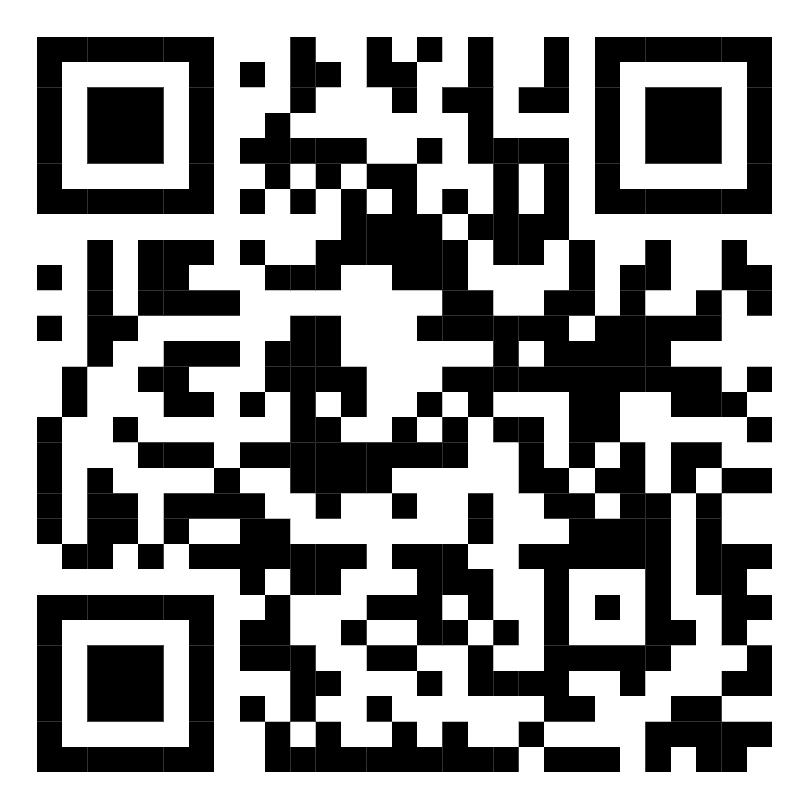

หน่วยที่ 10 การประยุกต์ใช้เทคโนโลยีอุบัติใหม่ในงานอาชีพ


“เทคโนโลยีอุบัติใหม่” (Emerging Technology) คือศัพท์ที่ใช้เรียกเทคโนโลยีใหม่ๆ ที่เกิดขึ้นในปัจจุบัน อย่าง เช่น นาโนเทคโนโลยี พันธุวิศวกรรม ซึ่งเราอาจจะไม่คุ้นเคยกับศัพท์นี้ แต่เชื่อว่าหลายคนมีโอกาสได้สัมผัส ยกตัวอย่างง่ายๆ คือสิ่งที่ใกล้ชิดเรามากที่สุดอย่าง “โทรศัพท์มือถือ” ที่เพียงไม่กี่ปีอุปกรณ์ชิ้นเล็กๆ จะกลายเป็นมากกว่าเครื่องมือที่ใช้ในการพูดคุย หากแต่ยังใช้เพื่อความบันเทิงในสารพัดรูปแบบ ทั้งดูหนัง-ฟังเพลง รวมทั้งเชื่อมต่อกับโลกภายนอกที่ครบวงจร


แต่ความก้าวหน้าก็นำมาซึ่งปัญหาของสังคม ไม่ว่าจะเป็นปัญหาเด็กติดเกม การดูเว็บไซต์อนาจาร เป็นต้น ขณะที่เราเห็นเทคโนโลยีก้าวไปอย่างไม่หยุดยั้ง เราก็ได้เห็นปัญหาของสังคมที่เพิ่มขึ้นเช่นกัน จึงได้มีการอภิปรายในหัวข้อ “เทคโนโลยีอุบัติใหม่กับสังคมไทย”
เป็นเทคโนโลยีแบบโลกาวินาศ” ศ.ปรีชากล่าว พร้อมทั้งให้ความเห็นว่าบางครั้งเราก็มองออกไปและตื่นเต้นกับโลกภายนอกจนลืมมองตัวเอง จึงอยากให้กลับมาสัมผัสแรงบันดาลใจจากภายในด้วย
อย่างไรก็ดี นาวาตรี ดร.วุฒิพงศ์ พงศ์สุวรรณ กรรมการสภาวิจัยแห่งชาติ สาขาเทคโนโลยีสารสนเทศและนิเทศศาสตร์ กล่าวว่า ทุกอย่างมีทั้งข้อดีและข้อเสีย ในส่วนของเทคโนโลยีกับสังคมไทยนั้น ก็ทำให้คนจากหลายประเทศ เชื้อชาติมารวมกันได้ แต่ก็ทำให้วัฒนธรรมถูกกลืนได้ง่าย เห็นได้จากเราให้นางงามชาวรัสเซียมาสอนไหว้ การติดต่อสื่อสารสะดวกรวดเร็วขึ้น แต่ก็ทำให้ความสัมพันธ์ของมนุษย์เสื่อมถอย หรือเรามีดาวเทียมเพื่อเฝ้าดูป่าไม้ เราก็เห็นว่าป่าลดแต่แก้ไขไม่ได้ ได้แค่ดูแต่ป้องกันไม่ได้ เป็นต้น
ส่วนปัญหาต่างๆ ที่เกิดขึ้น ดร.วุฒิพงศ์ ให้ความเห็นว่า เป็นเพราะเราไม่ได้วิจัยทางเทคโนโลยีอย่างจริงจัง แต่เราเป็นประเทศที่เสพและเทคโนโลยีเข้ามาอย่างเดียว หากเรามีการวิจัยเองก็จะมีความเข้าใจในเทคโนโลยีมากขึ้น และไม่ก่อให้เกิดปัญหา อีกทั้งนักวิทยาศาสตร์ก็ไม่เคยได้บริหารประเทศ มีแต่คนในภาคสังคมที่สั่งการลงมา จะโทษวิทยาศาสตร์ไม่ได้ต้องโทษมนุษย์ที่นำไปใช้ นักวิทยาศาสตร์ส่วนใหญ่ก็ตั้งใจดี แต่สังคมต่างหากที่เอาไปใช้ในทางไม่ดี
การประมวลผลแบบกลุ่มเมฆ (อังกฤษ: cloud computing) เป็นลักษณะของการทำงานของผู้ใช้งานคอมพิวเตอร์ผ่านอินเทอร์เน็ต ที่ให้บริการใดบริการหนึ่งกับผู้ใช้ โดยผู้ให้บริการจะแบ่งปันทรัพยากรให้กับผู้ต้องการใช้งานนั้น การประมวลผลแบบกลุ่มเมฆ เป็นลักษณะที่พัฒนาขึ้นต่อมาจากความคิดและบริการของเวอร์ชัวไลเซชันและเว็บเซอร์วิซ โดยผู้ใช้งานนั้นไม่จำเป็นต้องมีความรู้ในเชิงเทคนิคสำหรับตัวพื้นฐานการทำงานนั้น

เทคโนโลยีการประมวลผลแบบกลุ่มเมฆ (Cloud Computing) หมายถึง โมเดลที่ทำให้เกิดการเข้าถึงและใช้งานทรัพยากรคอมพิวเตอร์ เช่น เครือข่าย เครื่องเซิร์ฟเวอร์ หน่วยเก็บข้อมูล แอพพลิเคชั่น และระบบบริการอื่นๆ บนอินเทอร์เน็ตที่ใช้ร่วมกับผู้อื่น โดยผู้ให้บริการสามารถจัดเตรียมและปรับเปลี่ยนทรัพยากรคอมพิวเตอร์เหล่านี้ให้พร้อมใช้งานได้อย่างสะดวกและรวดเร็ว ทั้งนี้ โมเดล Cloud ประกอบด้วย คุณลักษณะเฉพาะที่สำคัญ 5 ประการ
On-demand self-service ผู้ใช้งานสามารถเข้าใช้งานทรัพยากรคอมพิวเตอร์ที่อยู่บนเครือข่าย Cloud ด้วยตัวเองได้ตลอดเวลาโดยไม่ต้องอาศัยการติดต่อกับผู้ให้บริการ
Broad network access ผู้ใช้งานสามารถเข้าถึงทรัพยากรคอมพิวเตอร์ที่อยู่บนเครือข่าย Cloud ได้ด้วยเครื่องมือ หรือ Platform หลากหลายชนิด เช่น โทรศัพท์มือถือTablet Laptop
Resource pooling เครือข่าย Cloud เป็นการรวมกันของทรัพยากรคอมพิวเตอร์ของผู้ให้บริการหลายแหล่ง ที่เรียกว่า Multi-tenant Model โดยทรัพยากรคอมพิวเตอร์เหล่านี้มีทั้งแบบกายภาพ (Physical) และแบบเสมือนกายภาพ (Virtual) ที่ถูกจัดสรรมาไว้ในเครือข่าย Cloud ซึ่งอาจมาจากผู้ให้บริการหลายแห่งหรือหลายประเทศ โดยที่ผู้ใช้งานไม่สามารถรู้หรือควบคุมได้ว่ากำลังใช้บริการทรัพยากรคอมพิวเตอร์จากแหล่งใด
Rapid elasticity ระบบบริการ Cloud สามารถปรับเปลี่ยนตามรูปแบบที่ผู้ใช้งานได้อย่างรวดเร็ว
Measured service ผู้ใช้งานและผู้ให้บริการสามารถที่จะวัดปริมาณการใช้งานระบบบริการ Cloud ตามความเป็นจริงได้
ดังนั้นจะเห็นได้ว่า เทคโนโลยี Cloud มีประโยชน์ในการช่วยประหยัดต้นทุนของการใช้ทรัพยากรคอมพิวเตอร์และการจัดการข้อมูล ผู้ใช้งานสามารถเข้าถึงข้อมูลจากทุกอุปกรณ์ ในทุกสถานที่และทุกเวลาบนโลก ผู้ใช้งานหลายคนที่ได้รับอนุญาตให้เข้าถึงข้อมูลสามารถทำงานบนเอกสารชุดเดียวกันได้ โดยมีตัวอย่าง แพลตฟอร์มการให้บริการ Cloud เช่น Dropbox, One drive, Google drive เป็นต้น
Public Cloud เป็น Cloud ที่เปิดให้มีการใช้บริการแบบสาธารณะผ่านอินเทอร์เน็ต ทำให้ทั้งองค์กรและบุคคลทั่วไปสามารถเข้าถึงได้ ทั้งนี้ Public Cloud สามารถที่จะอยู่ใน Abstraction Level ใดก็ได้ ตัวอย่างของ Public Cloud เช่น Google Print, Google Docs, Microsoft Office 365, และ Amazon EC2
Private Cloud เป็น Cloud เฉพาะขององค์กร บริษัท หรือบุคคลหนึ่งๆ ที่มีการให้บริการผ่านอินเทอร์เน็ตในขอบเขตที่จำกัด หรือที่เรียกว่า Wide Area Network (WAN) โดย Private Cloud จะมีการตั้งระบบรักษาความปลอดภัยเพื่อจำกัดการใช้เฉพาะบุคคลภายในเท่านั้น ซึ่งหลักการจะคล้ายกับ Local Area Network (LAN) ที่มีการใช้กันอยู่ตามบ้านหรือสำนักงานทั่วไปแต่ WAN จะครอบคลุมบริเวณที่กว้างกว่า
Community Cloud มีลักษณะเหมือน Private Cloud แต่ครอบคลุมพื้นที่บริเวณกว้างกว่า และเป็นการใช้บริการผ่านอินเทอร์เน็ต โดยพื้นที่บริเวณอาจหมายถึง ภูมิภาค ประเทศ ทวีป หรือ เขตพื้นที่เศรษฐกิจ เช่น European Union Community Cloud North American Cloud และ ASEAN Community Cloud เป็นต้น
Hybrid Cloud เ ป็น รูป แ บ บ ผ ส ม ข อ ง Cloud Deployment Model (Public Private Community) ตั้งแต่ 2 ประเภทขึ้นไป โดยผู้ให้บริการใน Cloud แต่ละรายภายใต้ Hybrid Cloud นี้จะทำงานแบบเป็นอิสระต่อกัน แต่จะถูกเชื่อมกันด้วยเทคโนโลยีเฉพาะที่ทำให้ข้อมูล และ Application สามารถถูกนำมาใช้งานร่วมกันได้
การที่เทคโนโลยี Cloud เติบโตและได้รับความนิยมอย่างรวดเร็วส่วนหนึ่งเป็นผลมาจากการแพร่หลายของอินเทอร์เน็ต และความเร็วของอินเทอร์เน็ตที่เพิ่มสูงขึ้น ส่งผลให้ผู้ใช้งานสามารถจัดการกับข้อมูลได้สะดวกรวดเร็วและทำงานกับข้อมูลขนาดใหญ่ได้ดีขึ้น เทคโนโลยีระบบเก็บรวบรวมข้อมูลแบบ Cloud จึงถูกพัฒนาขึ้นมาเพื่อรองรับกับการจัดการข้อมูลขนาดมหาศาล รวมถึงประโยชน์ และความสะดวกสบายของระบบที่มีต่อผู้ใช้งาน จึงมีการใช้งานระบบ Cloud อย่างแพร่หลาย ส่งผลให้ธุรกิจของผู้ให้บริการระบบ Cloud เติบโตอย่างรวดเร็ว
แบบทดสอบก่อนเรียน
